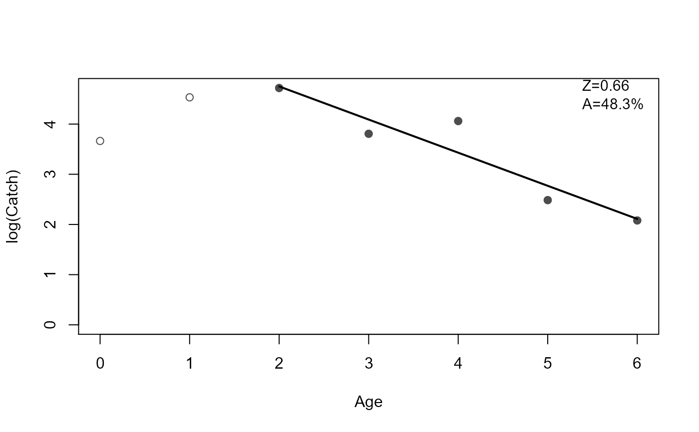
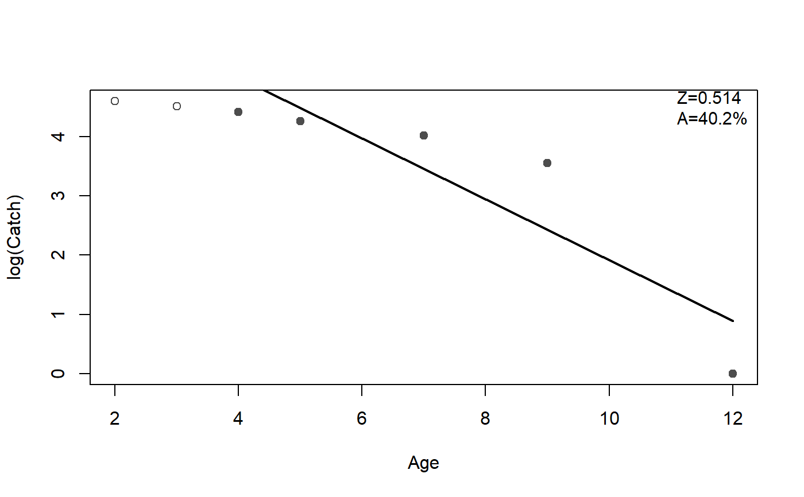
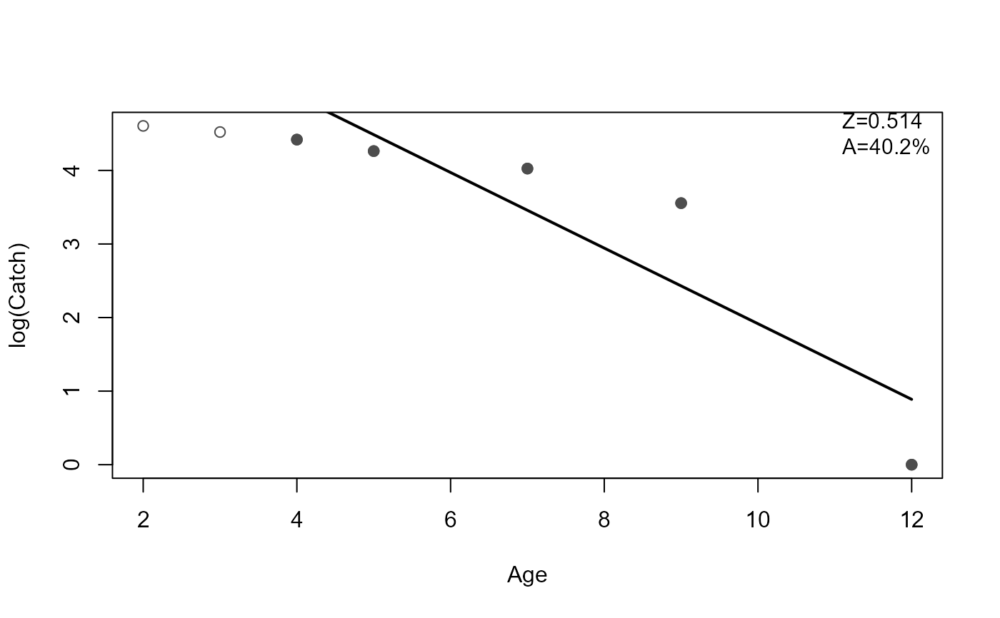

Fits a linear model to the user-defined descending limb of a catch curve. Method functions extract estimates of the instantaneous (Z) and total annual (A) mortality rates with associated standard errors and confidence intervals. A plot method highlights the descending limb, shows the linear model on the descending limb, and, optionally, prints the estimated Z and A.
catchCurve(x, ...) # S3 method for default catchCurve( x, catch, ages2use = age, weighted = FALSE, negWeightReplace = 0, ... ) # S3 method for formula catchCurve( x, data, ages2use = age, weighted = FALSE, negWeightReplace = 0, ... ) # S3 method for catchCurve summary(object, parm = c("both", "all", "Z", "A", "lm"), ...) # S3 method for catchCurve coef(object, parm = c("all", "both", "Z", "A", "lm"), ...) # S3 method for catchCurve anova(object, ...) # S3 method for catchCurve confint( object, parm = c("all", "both", "Z", "A", "lm"), level = conf.level, conf.level = 0.95, ... ) # S3 method for catchCurve rSquared(object, digits = getOption("digits"), percent = FALSE, ...) # S3 method for catchCurve plot( x, pos.est = "topright", cex.est = 0.95, ylab = "log(Catch)", xlab = "Age", col.pt = "gray30", col.mdl = "black", lwd = 2, lty = 1, ... )
| x | A numerical vector of assigned ages in the catch curve or a formula of the form |
|---|---|
| ... | Additional arguments for methods. |
| catch | A numerical vector of catches or CPUEs for the ages in the catch curve. Not used if |
| ages2use | A numerical vector of ages that define the descending limb of the catch curve. |
| weighted | A logical that indicates whether a weighted regression should be used. See details. |
| negWeightReplace | A single non-negative numeric that will replace negative weights (defaults to 0). Only used when |
| data | A data.frame from which the variables in the |
| object | An object saved from the |
| parm | A numeric or string (of parameter names) vector that specifies which parameters are to be given confidence intervals. If |
| level | Same as |
| conf.level | A number representing the level of confidence to use for constructing confidence intervals. |
| digits | The number of digits to round the |
| percent | A logical that indicates if the |
| pos.est | A string to identify where to place the estimated mortality rates on the plot. Can be set to one of |
| cex.est | A single numeric character expansion value for the estimated mortality rates on the plot. |
| ylab | A label for the y-axis ( |
| xlab | A label for the x-axis ( |
| col.pt | A string that indicates the color of the plotted points. |
| col.mdl | A string that indicates the color of the fitted line. |
| lwd | A numeric that indicates the line width of the fitted line. |
| lty | A numeric that indicates the type of line used for the fitted line. |
A list that contains the following items:
age The original vector of assigned ages.
catch The original vector of observed catches or CPUEs.
age.e A vector of assigned ages for which the catch curve was fit.
log.catch.e A vector of log catches or CPUEs for which the catch curve was fit.
W A vector of weights used in the catch curve fit. Will be NULL unless weighted=TRUE.
lm An lm object from the fit to the ages and log catches or CPUEs on the descending limb (i.e., in age.e and log.catch.e).
The default is to use all ages in the age vector. This is appropriate only when the age and catch vectors contain only the ages and catches on the descending limb of the catch curve. Use ages2use to isolate only the catch and ages on the descending limb.
If weighted=TRUE then a weighted regression is used where the weights are the log(number) at each age predicted from the unweighted regression of log(number) on age (as proposed by Maceina and Bettoli (1998)). If a negative weight is computed it will be changed to the value in negWeightReplace and a warning will be issued.
Tested the results of catch curve, both unweighted and weighted, against the results in Miranda and Bettoli (2007). Results for Z and the SE of Z matched perfectly. Tested the unweighted results against the results from agesurv in fishmethods using the rockbass data.frame in fishmethods. Results for Z and the SE of Z matched perfectly.
11-Mortality.
Ogle, D.H. 2016. Introductory Fisheries Analyses with R. Chapman & Hall/CRC, Boca Raton, FL.
Maceina, M.J., and P.W. Bettoli. 1998. Variation in Largemouth Bass recruitment in four mainstream impoundments on the Tennessee River. North American Journal of Fisheries Management 18:998-1003.
Ricker, W.E. 1975. Computation and interpretation of biological statistics of fish populations. Technical Report Bulletin 191, Bulletin of the Fisheries Research Board of Canada. [Was (is?) from http://www.dfo-mpo.gc.ca/Library/1485.pdf.]
See agesurv in fishmethods for similar functionality. See chapmanRobson and agesurvcl in fishmethods for alternative methods to estimate mortality rates. See metaM for empirical methods to estimate natural mortality.
## demonstration of formula notation cc1 <- catchCurve(catch~age,data=BrookTroutTH,ages2use=2:6) summary(cc1)#> Estimate Std. Error t value Pr(>|t|) #> Z 0.659987 0.136741 4.826549 0.01695159 #> A 48.314197 NA NA NA#> Est 95% LCI 95% UCI #> Z 0.659987 0.2248162 1.095158 #> A 48.314197 20.1337012 66.551321rSquared(cc1)#> [1] 0.8859124plot(cc1)#> Estimate Std. Error t value Pr(>|t|) #> Z 0.659987 0.136741 4.826549 0.01695159#> Est 95% LCI 95% UCI #> Z 0.659987 0.2248162 1.095158## demonstration of excluding ages2use cc2 <- catchCurve(catch~age,data=BrookTroutTH,ages2use=-c(0,1)) summary(cc2)#> Estimate Std. Error t value Pr(>|t|) #> Z 0.659987 0.136741 4.826549 0.01695159 #> A 48.314197 NA NA NAplot(cc2)## demonstration of using weights cc3 <- catchCurve(catch~age,data=BrookTroutTH,ages2use=2:6,weighted=TRUE) summary(cc3)#> Estimate Std. Error t value Pr(>|t|) #> Z 0.6430183 0.1417433 4.5365 0.02004993 #> A 47.4296703 NA NA NAplot(cc3)#> #> Call: #> stats::lm(formula = log.catch.e ~ age.e, weights = W, na.action = stats::na.exclude) #> #> Weighted Residuals: #> 1 2 3 4 5 #> -0.008845 -0.551857 1.155519 -0.513606 -0.103196 #> #> Coefficients: #> Estimate Std. Error t value Pr(>|t|) #> (Intercept) 6.0086 0.5475 10.974 0.00162 ** #> age.e -0.6430 0.1417 -4.536 0.02005 * #> --- #> Signif. codes: 0 '***' 0.001 '**' 0.01 '*' 0.05 '.' 0.1 ' ' 1 #> #> Residual standard error: 0.7988 on 3 degrees of freedom #> Multiple R-squared: 0.8728, Adjusted R-squared: 0.8304 #> F-statistic: 20.58 on 1 and 3 DF, p-value: 0.02005 #>#> Est 95% LCI 95% UCI #> (Intercept) 6.0085938 4.266116 7.751072 #> age.e -0.6430183 -1.094109 -0.191928## demonstration of ability to work with missing age classes df <- data.frame(age=c( 2, 3, 4, 5, 7, 9,12), ct= c(100,92,83,71,56,35, 1)) cc4 <- catchCurve(ct~age,data=df,ages2use=4:12)#> Warning: Some 'ages2use' not in observed ages.summary(cc4)#> Estimate Std. Error t value Pr(>|t|) #> Z 0.5139824 0.1495532 3.436786 0.04133277 #> A 40.1891060 NA NA NAplot(cc4)## demonstration of ability to work with missing age classes ## evein if catches are recorded as NAs df <- data.frame(age=c( 2, 3, 4, 5, 6, 7, 8, 9,10,11,12), ct= c(100,92,83,71,NA,56,NA,35,NA,NA, 1)) cc5 <- catchCurve(ct~age,data=df,ages2use=4:12) summary(cc5)#> Estimate Std. Error t value Pr(>|t|) #> Z 0.5139824 0.1495532 3.436786 0.04133277 #> A 40.1891060 NA NA NAplot(cc5)